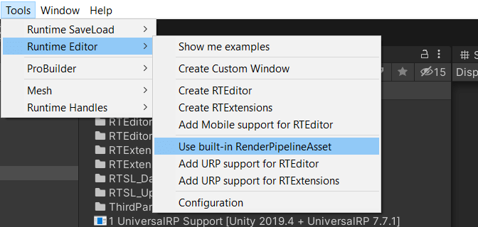
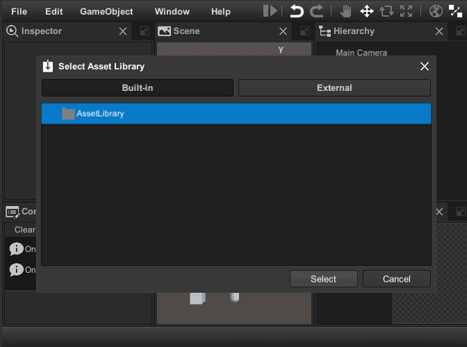
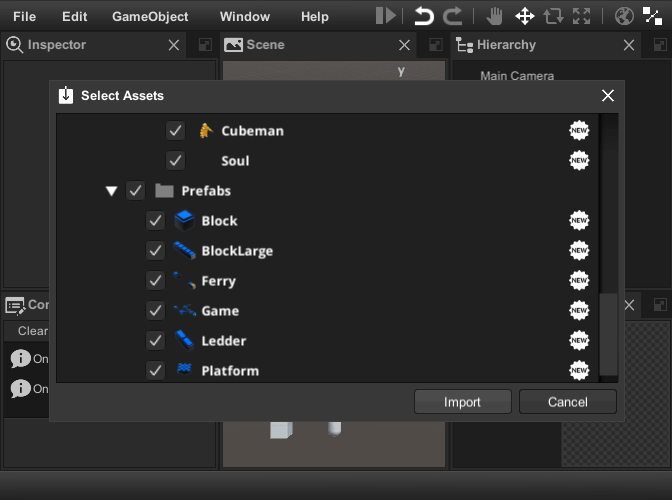
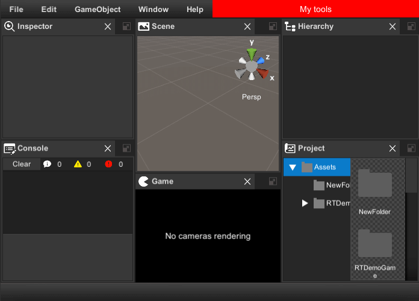
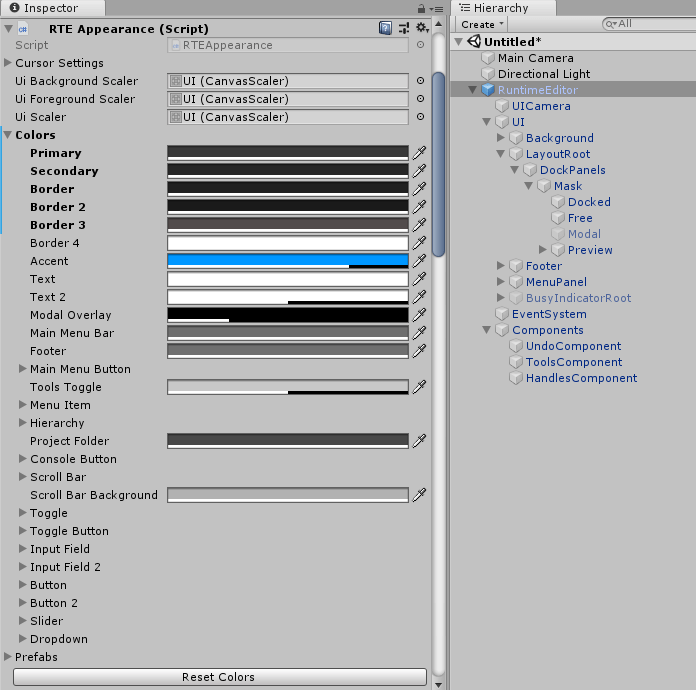
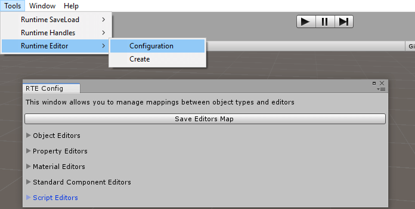

#Runtime Editor Docs ##Overview Runtime Editor is the set of scripts and prefabs which help you to create scene editor, game level editor or build your own modeling application. It supports drag & drop, undo & redo and selection api. To implement user interface and core functions runtime editor use transform-handles, gizmos, save load subsystem and three controls: menu, virtualizing tree view and dock panels. Out of the box it has seven Views:
- Scene View to manipulate objects in the scene.
- Hierarchy View to display and manipulate object tree.
- Project View to manage assets and scenes.
- Inspector View to display and edit object properties.
- Console View to display information, warnings and errors.
- Game View main game camera output.
- Animation View to create and edit the runtime animations.
- Add More...
The Runtime Editor has many ready-to-use property and component editors and it is relatively easy to create new ones. "Add Component" drop-down button allows you to add components at runtime. There are also several important dialogs included:
- Save Scene Dialog.
- Object Picker.
- Color Picker.
- Asset Bundles and Libraries Importer.
- Manage Projects Dialog.

##Getting Started
To get started with Runtime Editor do following:
Create new scene and save it.
Click Tools->Runtime Editor->Create RTEditor

Click "Yes" when you see the dialog box asking you to add the Game View Camera script.

Create several Game Objects and add Expose To Editor component.

Click Tools->Runtime SaveLoad->Config->Build All

Hit Play

Examples:
Note
The materials in the sample scenes were converted to Universal Render Pipeline.
Be sure to install the Battlehub/1 UniversalRP Support [Version] package before opening the samples.
See Universal Render Pipeline Support Docs for details.
Install Battlehub/1 Universal RP Support [Your Version] package
Install Battlehub/RTEditor Demo package
Click Tools->Runtime Editor->Use built-in RenderPipelineAsset, then click "Yes"

Click Tools->Runtime Editor->Show me examples

Open RTEditor scene.

Delete Battlehub/RTSL_Data folder.

Click Tools->Runtime SaveLoad->Config->Build All
Hit Play
Few more steps:
Launch runtime editor and click File->Import Assets.

Select the built-in asset library created in step 1.

Import assets.

You will see the imported assets in the project window.

Note
Demo scene can be found in Assets/Battlehub/RTEditorDemo/Content/Runtime/RTEditor
##Main & Context Menu
Runtime Editor use Menu control to implement main and context-menu. To extend main menu create static class with [MenuDefinition] attribute and add static methods with [MenuCommand] attribute.
using Battlehub.RTCommon;
using Battlehub.RTEditor;
using Battlehub.UIControls.MenuControl;
using UnityEngine;
[MenuDefinition]
public static class MyMenu
{
/// add new command to exising menu
[MenuCommand("MenuWindow/Create My Window")]
public static void CreateMyWindow()
{
Debug.Log("Create My Window");
}
/// add new command to new menu
[MenuCommand("My Menu/My Submenu/My Command")]
public static void CreateMyMenu()
{
Debug.Log("Create My Menu");
}
/// disable menu item
[MenuCommand("My Menu/My Submenu/My Command", validate: true)]
public static bool ValidateMyCommand()
{
Debug.Log("Disable My Command");
return false;
}
/// replace existing menu item
[MenuCommand("MenuFile/Close")]
public static void Close()
{
Debug.Log("Intercepted");
IRuntimeEditor rte = IOC.Resolve<IRuntimeEditor>();
rte.Close();
}
/// Hide existing menu item
[MenuCommand("MenuHelp/About RTE", hide: true)]
public static void HideAbout() { }
}

To open context menu with custom commands do following:
using Battlehub.RTCommon;
using Battlehub.RTEditor;
using Battlehub.UIControls.MenuControl;
using UnityEngine;
public static class MyContextMenu
{
public static void OpenContextMenu()
{
IContextMenu contextMenu = IOC.Resolve<IContextMenu>();
MenuItemInfo cmd1 = new MenuItemInfo { Path = "My Command 1" };
cmd1.Action = new MenuItemEvent();
cmd1.Action.AddListener((args) =>
{
Debug.Log("Run My Command1");
IRuntimeEditor editor = IOC.Resolve<IRuntimeEditor>();
Debug.Log(editor.Selection.activeGameObject);
});
MenuItemInfo cmd2 = new MenuItemInfo { Path = "My Command 2" };
cmd2.Validate = new MenuItemValidationEvent();
cmd2.Action = new MenuItemEvent();
cmd2.Validate.AddListener((args) =>
{
args.IsValid = false;
});
cmd2.Action.AddListener((args) =>
{
Debug.Log("Run My Command2");
});
contextMenu.Open(new[]
{
cmd1, cmd2
});
}
}

Built-in context menu populated and opened from Assets/Battlehub/RTEditor/Runtime/RTEditor/ViewModels/ProjectFolderViewModel.cs and ProjectTreeViewModel.cs

##RTEDeps
The main purpose of the Assets/Battlehub/RTEditor/Runtime/RTEditor/RTEDeps.cs class is to register various services into IOC:
- IResourcePreviewUtility - create preview for Game Object or asset.
- IWindowManager - manage build-in and custom windows.
- IContextMenu - create and show context menu.
- IRuntimeConsole - log messages cache.
- IRuntimeEditor - the main interface of the RuntimeEditor.
##IRuntimeEditor
IRuntimeEditor inherits the IRTE interface and adds several important methods and events.
using Battlehub.RTCommon;
using Battlehub.RTEditor;
using UnityEngine;
public class GetRuntimeEditor : MonoBehaviour
{
void Start()
{
IRuntimeEditor editor = IOC.Resolve<IRuntimeEditor>();
}
}
Events:
event RTEEvent SceneLoading- fired before loading the scene.event RTEEvent SceneLoaded- fired after loading the scene.event RTEEvent SceneSaving- fired before saving the scene.event RTEEvent SceneSaved- fired before saving the scene.
Methods:
void NewScene(bool confirm = true)- create a new scene (show the confirmation dialog by default).void SaveScene()- save the current scene. If the scene is new, the save scene dialog will appear.void CreateWindow(string window)- call corresponding method of window manager.void CreateOrActivateWindow(string window)- this method creates a window only if it does not exist.ProjectAsyncOperation<AssetItem[]> CreatePrefab(ProjectItem folder, ExposeToEditor obj, bool? includeDeps = null)- create prefab with preview.ProjectAsyncOperation<AssetItem[]> SaveAssets(UnityObject[], Action<AssetItem[]>)- save assets.ProjectAsyncOperation<ProjectItem[]> DeleteAssets(ProjectItem[] projectItems)- delete assets.ProjectAsyncOperation<AssetItem> UpdatePreview(UnityObject obj)- update asset preview.
Example:
using Battlehub.RTCommon;
using Battlehub.RTEditor;
using Battlehub.RTSL.Interface;
using System.Threading.Tasks;
using UnityEngine;
public class IRuntimeEditorMethodsUsageExample : EditorExtension
{
protected override async void OnInit()
{
base.OnInit();
//Get runtime editor
IRuntimeEditor editor = IOC.Resolve<IRuntimeEditor>();
IProjectAsync project = IOC.Resolve<IProjectAsync>();
while (!project.State.IsOpened)
{
await Task.Yield();
}
//Create Prefabs folder
ProjectItem[] folders = await project.CreateFoldersAsync(new[] { "Prefabs" });
//Create new object and hide it from hierarchy
GameObject go = GameObject.CreatePrimitive(PrimitiveType.Sphere);
go.hideFlags = HideFlags.HideAndDontSave;
go.SetActive(false);
//Create prefab with preview and destroy source object
await editor.CreatePrefabAsync(folders[0], go.AddComponent<ExposeToEditor>(), true);
Destroy(go);
//Load prefab
GameObject loadedGo = await project.Load_Async<GameObject>("Prefabs/Sphere");
//... Make changes
//Update preview
await editor.UpdatePreviewAsync(loadedGo);
//Save changes
await editor.SaveAssetsAsync(new[] { loadedGo });
//Get corresponding project item
ProjectItem projectItem = project.Utils.ToProjectItem(loadedGo);
//Delete prefab and clear undo stack
await editor.DeleteAssetsAsync(new[] { projectItem });
//Delete folders
await project.DeleteAsync(folders);
}
}
##Window Manager
Window Manager allows you to create complex windows, such as an inspector or scene, and simple dialogs, such as a message box or confirmation. The difference between dialog and window is rather subtle. The content of the dialog can be anything, and it can not be docked. To be considered as a window or dialog window, a Runtime Window component must be attached to the game object. When the runtime window is activated, the other windows are deactivated. The dialog cannot deactivate the window.
Note
Default windows and dialogs can be found in Assets/Battlehub/RTEditor/Content/Runtime/RTEditor/Prefabs
Note
Window Manager use dock panels control.
Get window manager:
using Battlehub.RTCommon;
using Battlehub.RTEditor;
using UnityEngine;
public class GetWindowManager : MonoBehaviour
{
void Start()
{
IWindowManager wm = IOC.Resolve<IWindowManager>();
}
}
Show message box: ```C# wm.MessageBox("Header", "Text", (sender, args) => { Debug.Log("OK Click"); }); ```
Show confirmation: ```C# wm.Confirmation("Header", "Text", (sender, args) => { Debug.Log("Yes click"); }, (sender, args) => { Debug.Log("No click"); }, "Yes", "No"); ```
Activate window: ```C# wm.ActivateWindow(BuiltInWindowNames.Scene); ```
Create window: ```C# wm.CreateWindow(BuiltInWindowNames.Scene); ```
Create dialog window: ```C# IWindowManager wm = IOC.Resolve
Set default layout: ```C# IWindowManager wm = IOC.Resolve
wm.SetDefaultLayout();
##How to: add custom window to Window Manager
> [!NOTE]
> For information on how to create custom window please navigate to this -> [this](infrastructure.md#runtime-window) <- section
1. Click Tools->Runtime Editor->Create Custom Window.

2. Enter MyCustomWindow.prefab and click Save.
3. Enter MyNamespace namespace and click OK.
3. Add __RegisterMyCustomWindow__ component created in step 1.
4. Drag & Drop MyCustomWindow.prefab to Prefab field of RegisterMyCustomWindow script.
5. Click Play.
6. You should be able to open custom window using main menu.

7. Use [UnityWeld] (https://github.com/Real-Serious-Games/Unity-Weld).
##How to: override default layout
To override default layout do following:
1. Create a script derived from LayoutExtension.
2. Override `GetLayoutInfo` method.
3. Create a new game object and add created script.
4. To prevent the game object from being destroyed by [Save & Load](save-load.md) add __RTSLIgnore__ component.

``` C#
using Battlehub.UIControls.DockPanels;
namespace Battlehub.RTEditor.Examples.Layout
{
/// <summary>
/// Creates three colums layout (inspector, (scene, hierarchy))
/// </summary>
public class ThreeColumsLayoutExample : LayoutExtension
{
protected override LayoutInfo GetLayoutInfo(IWindowManager wm)
{
LayoutInfo scene = wm.CreateLayoutInfo(BuiltInWindowNames.Scene);
scene.IsHeaderVisible = true;
LayoutInfo hierarchy = wm.CreateLayoutInfo(BuiltInWindowNames.Hierarchy);
LayoutInfo inspector = wm.CreateLayoutInfo(BuiltInWindowNames.Inspector);
//Defines a region divided into two equal parts (ratio 1 / 2)
LayoutInfo sceneAndHierarchy =
LayoutInfo.Horizontal(scene, hierarchy, ratio: 1/2.0f);
//Defines a region divided into two parts
//1/3 for the inspector and 2/3 for the scene and hierarchy)
LayoutInfo layoutRoot =
LayoutInfo.Horizontal(inspector, sceneAndHierarchy, ratio: 1/3.0f);
return layoutRoot;
}
}
}
You should see following:

##How to: override scene parameters
To override scene parameters do following:
- Create ScenesSetupExample script.
- Override
Extendmethod and WindowTypeName property. - Create a new game object and add created script.
- To prevent the game object from being destroyed by Save & Load add RTSLIgnore component.
using Battlehub.RTCommon;
using Battlehub.RTHandles;
using UnityEngine;
namespace Battlehub.RTEditor.Examples.SceneSetup
{
/// <summary>
/// This extension initializes 2D scene window
/// </summary>
public class ScenesSetupExample : RuntimeWindowExtension
{
/// <summary>
/// Type of window to be extended
/// </summary>
public override string WindowTypeName => BuiltInWindowNames.Scene;
protected override void Extend(RuntimeWindow window)
{
//get a reference to the IRuntimeSceneComponent of the window
IRuntimeSceneComponent sceneComponent =
window.IOCContainer.Resolve<IRuntimeSceneComponent>();
//This is the point the camera looks at and orbiting around
sceneComponent.Pivot = Vector3.zero;
//Switch the scene component and scene camera to orthographic mode
sceneComponent.IsOrthographic = true;
//Disable scene gizmo
sceneComponent.IsSceneGizmoEnabled = false;
//Disable rotation
sceneComponent.CanRotate = false;
//Disable free move
sceneComponent.CanFreeMove = false;
//Prevent camera position changes when zooming in and out
sceneComponent.ChangeOrthographicSizeOnly = true;
//Set initial orthographic size
sceneComponent.OrthographicSize = 5.0f;
//Set camera position according to window.Args
const float distance = 100;
sceneComponent.CameraPosition = -Vector3.forward * distance;
}
}
}
##How to: override tools panel
To override tools panel do following:
- Create ToolsPanelOverride script.
- Create game object and add ToolsPanelOverride component.
- Set Tools Prefab field
- To prevent the game object from being destroyed by Save & Load add RTSLIgnore component.

using Battlehub.RTCommon;
using Battlehub.RTEditor;
using UnityEngine;
public class ToolsPanelOverrideExample : EditorExtension
{
[SerializeField]
private Transform m_toolsPrefab = null;
protected override void OnEditorCreated(object obj)
{
OverrideTools();
}
protected override void OnEditorExist()
{
OverrideTools();
IRuntimeEditor editor = IOC.Resolve<IRuntimeEditor>();
if (editor.IsOpened)
{
IWindowManager wm = IOC.Resolve<IWindowManager>();
if (m_toolsPrefab != null)
{
wm.SetTools(Instantiate(m_toolsPrefab));
}
else
{
wm.SetTools(null);
}
}
}
private void OverrideTools()
{
IWindowManager wm = IOC.Resolve<IWindowManager>();
wm.OverrideTools(m_toolsPrefab);
}
}
You should see following:

##How to: override ui scale
To override ui scale do following:
- Create UIScaleOverride script.
- Create game object and add UIScaleOverride component.
- Set desired
Scale - To prevent the game object from being destroyed by Save & Load add RTSLIgnore component.
using Battlehub.RTCommon;
using Battlehub.RTEditor;
using UnityEngine;
public class UIScaleOverride : EditorExtension
{
[SerializeField]
private float Scale = 2;
protected override void OnEditorExist()
{
ISettingsComponent settings = IOC.Resolve<ISettingsComponent>();
settings.UIScale = Scale;
}
}
Before:

After:

##How to: change runtime editor colors
RTE Appearance editor allows you to change colors of runtime editor. Reset Colors button will revert colors to default.

Following resources must be modified also:

To override ui colors programmatically do following:
- Create UIColorsOverride script.
- Create game object and add UIColorsOverride component.
- To prevent the game object from being destroyed by Save & Load add RTSLIgnore component.
using Battlehub.RTCommon;
using UnityEngine;
namespace Battlehub.RTEditor.Demo
{
public class UIColorsOverride : EditorExtension
{
protected override void OnEditorExist()
{
ISettingsComponent settings = IOC.Resolve<ISettingsComponent>();
settings.SelectedThemeIndex = -1;
RTEColors colors = new RTEColors();
colors.Primary = Color.red;
IRTEAppearance appearance = IOC.Resolve<IRTEAppearance>();
appearance.Colors = colors;
}
}
}
##File Importers
File importers are used during file import procedure to convert external file format to format supported by Runtime Editor. For example .png images should be converted to UnityEngine.Texture2D before import.
Note
Unpack Battlehub/3 RTEditor Importer package

FileBrowser with importers can be opened using File->Import From File menu item

To write custom importer do following. Create new script and inherit your class from ProjectFileImporterAsync:
using Battlehub.RTCommon;
using Battlehub.RTSL.Interface;
using System;
using System.IO;
using System.Threading;
using System.Threading.Tasks;
using UnityEngine;
using UnityObject = UnityEngine.Object;
namespace Battlehub.RTEditor
{
public class JpgImporterExample : ProjectFileImporterAsync
{
public override string FileExt
{
get { return ".jpg"; }
}
public override string IconPath
{
get { return "Importers/Jpg"; }
}
public override Type TargetType
{
get { return typeof(Texture2D); }
}
public override async Task ImportAsync(
string filePath,
string targetPath,
IProjectAsync project,
CancellationToken cancelToken)
{
byte[] bytes = filePath.Contains("://") ?
await DownloadBytesAsync(filePath) :
File.ReadAllBytes(filePath);
Texture2D texture = new Texture2D(4, 4);
try
{
if (texture.LoadImage(bytes, false))
{
IResourcePreviewUtility previewUtility =
IOC.Resolve<IResourcePreviewUtility>();
byte[] preview = previewUtility.CreatePreviewData(texture);
using (await project.LockAsync())
{
await project.SaveAsync(targetPath, texture, preview);
}
}
else
{
throw new FileImporterException($"Unable to load image {filePath}");
}
}
catch (Exception e)
{
throw new FileImporterException(e.Message, e);
}
finally
{
UnityObject.Destroy(texture);
}
}
}
}
Note
Currently File Browser supported on Windows platform only
##Inspector View
The main purpose of the inspector is to create different editors depending on the type of selected object and its components. Here is a general idea of what is happening:
- The user selects a Game Object, and the inspector creates a GameObject editor.
- The game object editor creates component editors.
- Each component editor creates property editors.

Prefabs:
- InspectorView can be found in Assets/Battlehub/RTEditor/Content/Runtime/RTEditor/
Prefabs/Views folder, - GameObject, Material and Component editors in Assets/Battlehub/RTEditor/Content/
Runtime/RTEditor/Prefabs/Editors, - Property editors in Assets/Battlehub/RTEditor/Content/Runtime/RTEditor/Prefabs/
Editors/PropertyEditors.

##How To: Configure Editors
To select the editors to be used by the inspector, click Tools->Runtime Editor->Configuration

There are five sections in configuration window:
- Object Editors - select which editor to use for Game Object.
- Property Editors - select which editors to use for component properties.
- Material Editors - select which editors to use for materials
- Standard Component Editors – select which editors to use for standard components.
- Script Editors – select which editors to use for scripts.
After you select and enable the desired component editors, click the Save Editors Map button

##How To: Select Component Properties
To select the properties displayed by the component editor, you need to create a class and inherit it from ComponentDescriptorBase<
using UnityEngine;
using System.Reflection;
using Battlehub.Utils;
using Battlehub.RTCommon;
namespace Battlehub.RTEditor
{
public class TransformComponentDescriptor : ComponentDescriptorBase<Transform>
{
public override object CreateConverter(ComponentEditor editor)
{
object[] converters = new object[editor.Components.Length];
Component[] components = editor.Components;
for (int i = 0; i < components.Length; ++i)
{
Transform transform = (Transform)components[i];
if (transform != null)
{
converters[i] = new TransformPropertyConverter
{
ExposeToEditor = transform.GetComponent<ExposeToEditor>()
};
}
}
return converters;
}
public override PropertyDescriptor[] GetProperties(
ComponentEditor editor, object converter)
{
object[] converters = (object[])converter;
MemberInfo position = Strong.PropertyInfo(
(Transform x) => x.localPosition, "localPosition");
MemberInfo positionConverted = Strong.PropertyInfo(
(TransformPropertyConverter x) => x.LocalPosition, "LocalPosition");
MemberInfo rotation = Strong.PropertyInfo(
(Transform x) => x.localRotation, "localRotation");
MemberInfo rotationConverted = Strong.PropertyInfo(
(TransformPropertyConverter x) => x.LocalEuler, "LocalEulerAngles");
MemberInfo scale = Strong.PropertyInfo(
(Transform x) => x.localScale, "localScale");
MemberInfo scaleConverted = Strong.PropertyInfo(
(TransformPropertyConverter x) => x.LocalScale, "LocalScale");
return new[]
{
new PropertyDescriptor( "Position",converters, positionConverted, position),
new PropertyDescriptor( "Rotation", converters, rotationConverted, rotation),
new PropertyDescriptor( "Scale", converters, scaleConverted, scale)
};
}
}
}
TransformPropertyConverter is used to convert a quaternion to Euler angles. This is needed for Vector3Editor to be used instead of QuaternionEditor.
Note
The remaining built-in component descriptors are in the Assets/Battlehub/RTEditor/Runtime/RTEditor/Editors/ComponentDescriptors folder.
##Resource Preview Utility
The Resource Preview utility is used to create a preview of objects. This is how to use it:
using Battlehub.RTCommon;
using UnityEngine;
using UnityEngine.UI;
namespace Battlehub.RTEditor.Demo
{
public class CreatePreviewExample : MonoBehaviour
{
[SerializeField]
private Image m_image = null;
[SerializeField]
private Object m_object = null;
private Texture2D m_previewTexture;
private Sprite m_previewSprite;
private void Update()
{
if (Input.GetKeyDown(KeyCode.Space))
{
IResourcePreviewUtility previewUtil = IOC.Resolve<IResourcePreviewUtility>();
if (m_previewTexture != null)
{
Destroy(m_previewTexture);
}
if (m_previewSprite != null)
{
Destroy(m_previewSprite);
}
if(previewUtil.CanCreatePreview(m_object))
{
m_previewTexture = previewUtil.CreatePreview(m_object);
m_previewSprite = Sprite.Create(m_previewTexture,
new Rect(0, 0, m_previewTexture.width, m_previewTexture.height),
new Vector2(0.5f, 0.5f));
m_image.sprite = m_previewSprite;
}
}
}
private void OnDestroy()
{
if (m_previewSprite != null)
{
Destroy(m_previewSprite);
}
if (m_previewTexture != null)
{
Destroy(m_previewTexture);
}
}
}
}